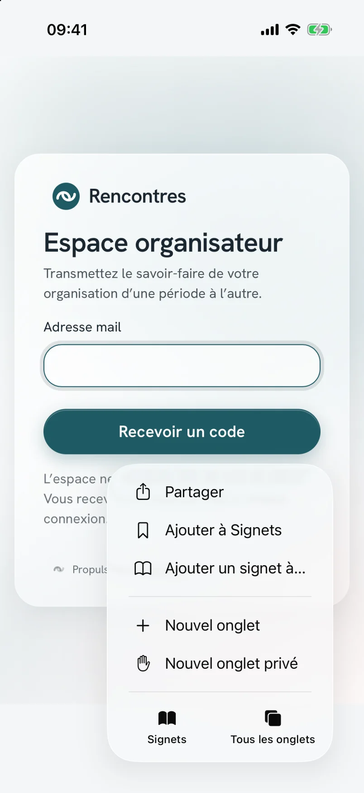
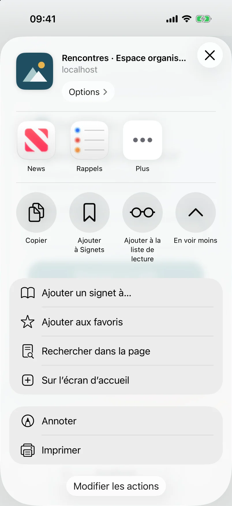
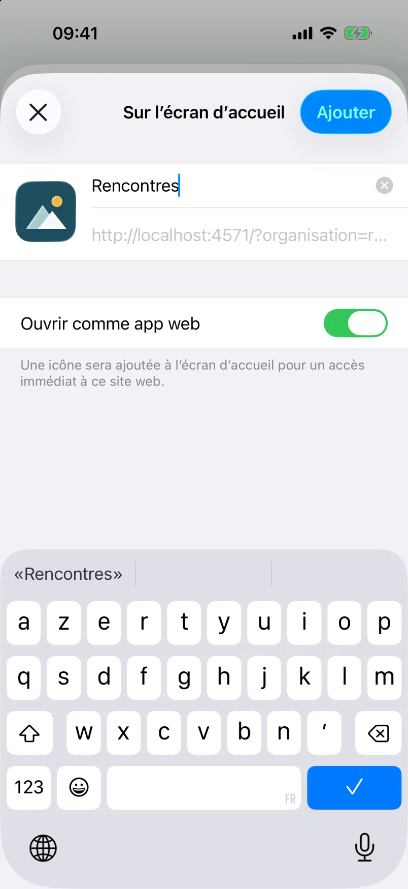
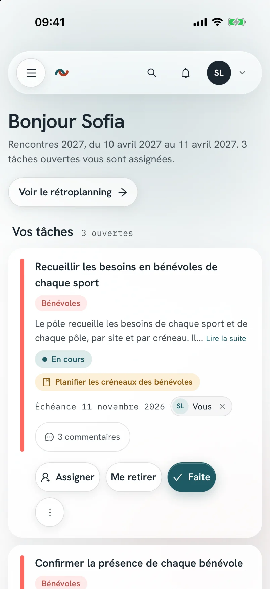

Vous ajoutez l'espace organisateur à l'écran d'accueil de votre téléphone. Il s'ouvre alors comme une application, sous le nom et l'icône de votre organisation, sans barre d'adresse.
Ce mode d'emploi complète la section « Premier pas » du mode d'emploi des référentes et référents. L'installation est facultative : l'espace organisateur fonctionne aussi dans votre navigateur.
Point de départ
Ce que l'installation change
L'application installée est le même espace organisateur, à la même adresse. Aucun magasin d'applications n'intervient : votre navigateur pose un raccourci sur l'écran d'accueil, et l'application s'ouvre en plein écran.
Dans l'espace organisateur, le menu de votre compte porte l'entrée Installer l'application. Elle affiche les étapes de l'appareil que vous utilisez.
Trois appareils
Installer l'application
Ouvrez d'abord l'espace organisateur de votre organisation dans le navigateur indiqué. Le nom des menus peut varier d'une version du système à l'autre.
iPhone et iPad
Safari
1Ouvrir l'espace organisateur dans Safari.
2Toucher le bouton « Partager » : un carré surmonté d'une flèche. Sur iOS 26, il se trouve dans le menu « ··· », en bas à droite de l'écran.
3Toucher « En voir plus » si la liste est repliée, puis « Sur l'écran d'accueil ».
4Vérifier le nom proposé, laisser « Ouvrir comme app web » activé, puis toucher « Ajouter ».

Le menu « ··· » de Safari, puis « Partager ».

La feuille de partage dépliée, puis « Sur l'écran d'accueil ».

Le nom et l'icône de l'organisation, puis « Ajouter ».

L'application ouverte depuis l'écran d'accueil.
Ces captures viennent d'un iPhone sous iOS 26, sur l'organisation d'exemple. L'adresse affichée est celle de cette installation d'essai.
Depuis iOS 16.4, Chrome, Edge et Firefox proposent la même entrée dans leur menu de partage. Sur une version plus ancienne, seul Safari installe l'application.
Téléphone Android
Chrome
1Ouvrir l'espace organisateur dans Chrome.
2Ouvrir le menu du compte, puis toucher « Installer l'application ».
3Toucher le bouton « Installer », puis confirmer dans la fenêtre de Chrome.
Si le bouton « Installer » n'apparaît pas, ouvrez le menu « ⋮ » de Chrome, puis touchez « Ajouter à l'écran d'accueil ».
Ordinateur
Chrome ou Edge
1Ouvrir l'espace organisateur dans Chrome ou dans Edge.
2Cliquer sur l'icône d'installation, à droite de la barre d'adresse.
3Cliquer sur « Installer ».
Sur Mac, Safari propose « Ajouter au Dock » dans le menu « Fichier ».
Première ouverture
Vous connecter dans l'application
L'application installée vous demande de vous connecter, même si vous étiez connecté·e dans votre navigateur. Sur iPhone, l'application et Safari ne partagent pas leur session.
Saisir le code
/connexion
1Ouvrir l'application depuis l'écran d'accueil.
2Saisir votre adresse mail, puis toucher « Recevoir un code ».
3Lire le code à 6 chiffres dans le mail reçu, sans toucher son lien.
4Revenir dans l'application, puis saisir le code.
Le lien du mail ouvre votre navigateur, pas l'application installée. Votre téléphone propose souvent le code au-dessus du clavier. Votre session dure ensuite 30 jours, et se prolonge à chaque visite.
Facultatif
Recevoir les notifications
Votre téléphone affiche une notification quand une tâche vous est assignée, quand une de vos échéances approche ou quand une demande attend votre revue. L'application peut rester fermée. Sur iPhone et iPad, ces notifications n'existent que dans l'application installée.
Activer sur un appareil
/<activité>/preferences
1Ouvrir le menu du compte, puis « Préférences ».
2Dans le panneau « Notifications sur cet appareil », toucher Activer sur cet appareil.
3Répondre « Autoriser » à la question de votre téléphone.
L'activation vaut pour cet appareil seulement : vous la répétez sur chaque téléphone ou ordinateur. Trois réglages coupent une famille de notifications sur tous vos appareils : vos tâches, les échéances et les demandes. Vos mails ne changent pas.
Le panneau n'apparaît pas quand votre organisation n'a pas ouvert les notifications. Une déconnexion les désactive sur l'appareil.
Bon à savoir
Au quotidien
Sans réseau
L'application affiche un écran « Hors connexion ». Vos tâches et vos fiches ne se consultent pas sans réseau. L'application reprend dès le retour du réseau.
Nouvelle version
Un avis annonce une nouvelle version. Vous enregistrez votre travail, puis vous touchez « Recharger ». L'application ne se recharge jamais seule.
Supprimer l'application
Vous la supprimez comme toute autre application de votre téléphone. Votre compte et vos données restent dans l'espace organisateur.
Si l'icône porte le logo de Relaytour
Votre organisation n'a pas encore déclaré son icône d'application. Un admin de l'organisation l'ajoute dans l'écran « Organisation », décrit dans le mode d'emploi des admins de l'organisation.